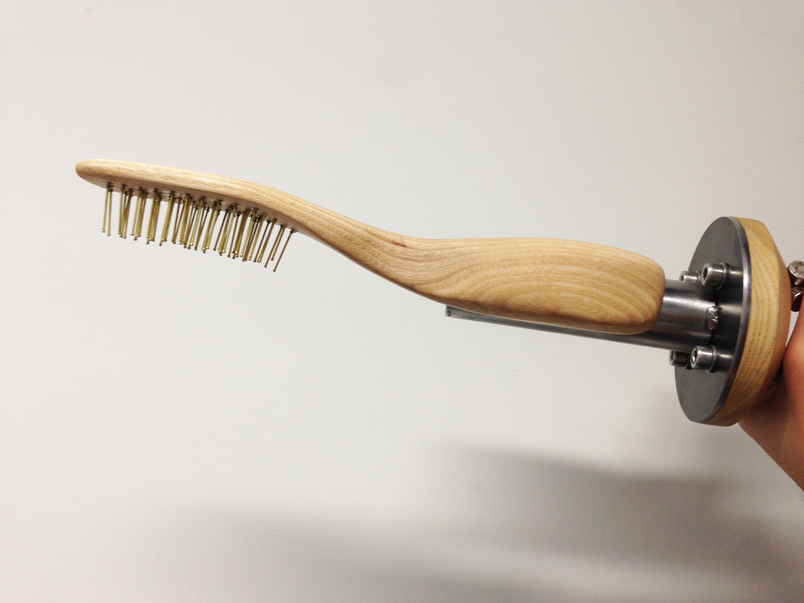
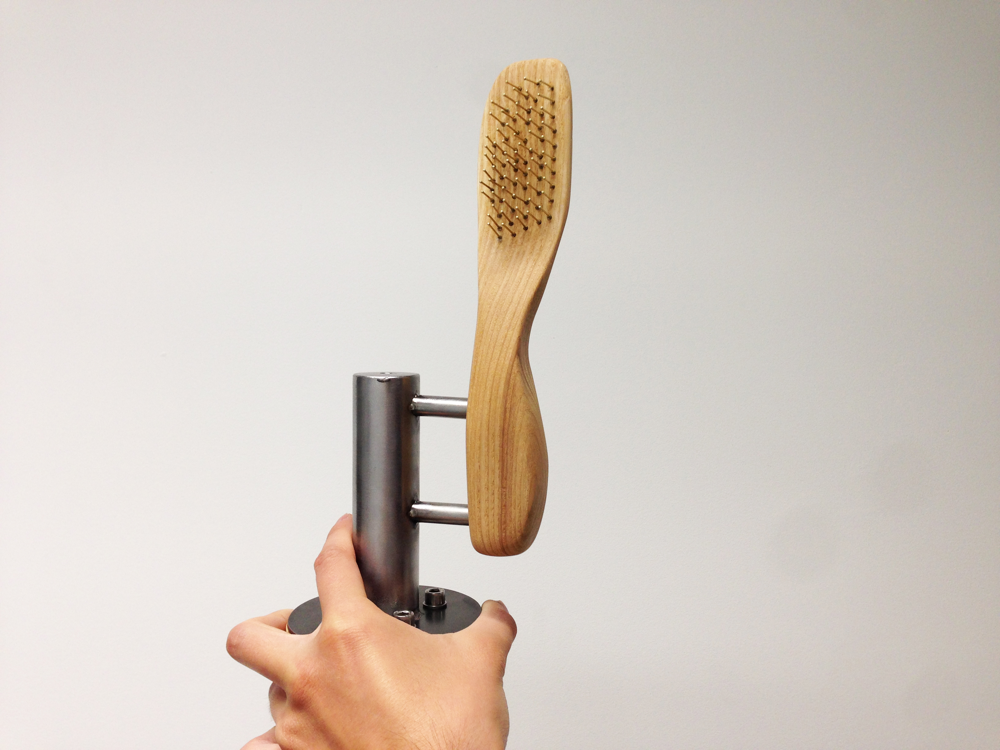
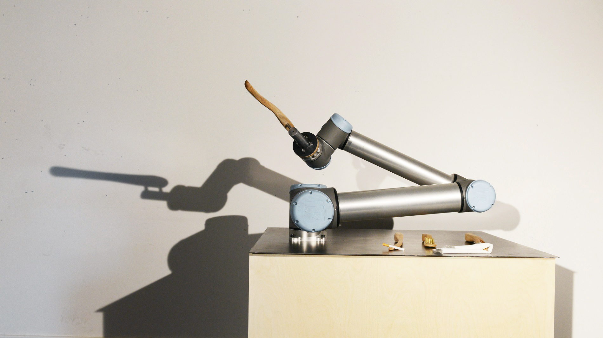
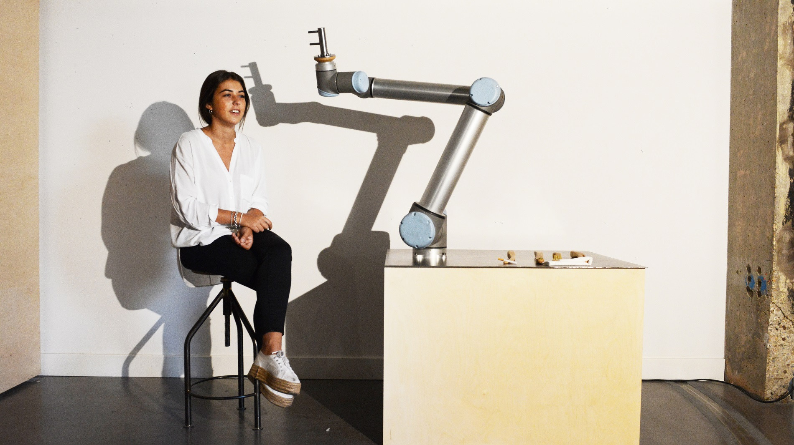

Summary of the week
This week I built one more end effector and I finally managed to take a UR10 out of its cell. The stage of the final video-shooting was also setup.
Inputs from Jess and Ruairi
.Look at the world of object theatre, how can objects' function be distorted in order to produce characters?
.What is the final message?
End-effector 4: a hair brush
This is the prototype of a custom made hair brush, opening scene of the ritual perhaps.

Stage design
Pictures below show the proposed setup, with the robot sitting next to the actor and all the tool placed on the metal tabletop. Perhaps missing a lamp, a vase with a plant or something like that. Thanks to Mads Hulsroy for borrowing his marvellous stool. Thanks to Arianna Di Pasquale per la pazienza di farsi fare qualche foto!

Conclusions
The stage looks okay, perhaps needs some more props in the shot. Next week filming!